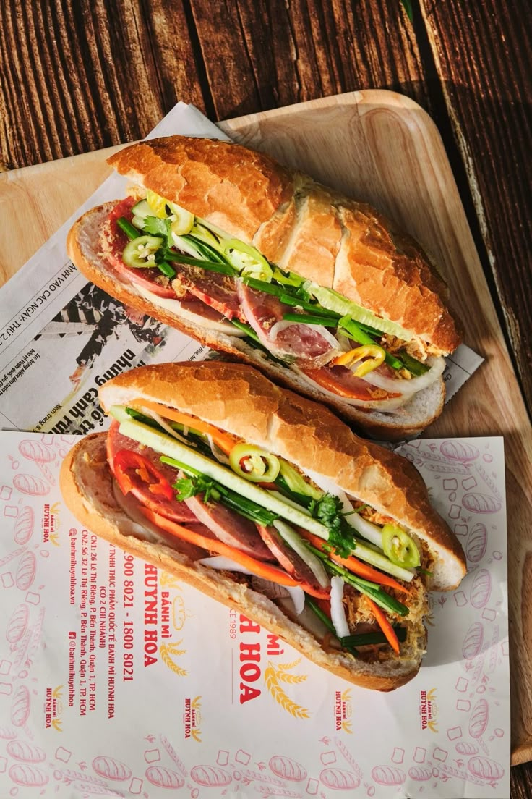

Bánh mì

The famous Vietnamese baguette sandwich, with French colonial roots but distinctly Vietnamese flavors. A perfect banh mi contains:
- Crispy baguette
- Pâté and mayonnaise
- Cold cuts or grilled meats
- Pickled vegetables
- Cilantro and chili
Regional variations include different meats and additional toppings like fried eggs or seafood.